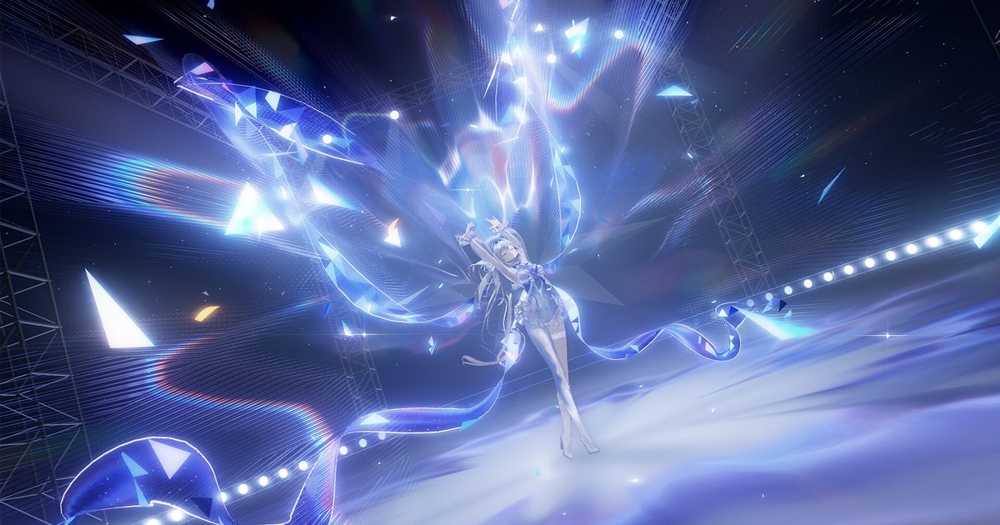

2026-11-21 · 版本深读 / 养成结构

11 月 21 日，《战双帕弥什》4.9.1「流光抛诸寰宇」更新。新 S 级莱亚·祈星、 她的六星专武「扭曲缎带的边陲」、六星意识「莫斯梅」、辅助机「聆璃」—— 该有的都有，一份标准到不能再标准的版本公告。
但这一版真正值得看的，是公告里单独成节的那三行字： 「谐振觉醒系统 —— 六星武器「怒霆敕天」新增谐振 II， 激活后可为其持有者解锁更强的被动效果与技能等级提升。」
「怒霆敕天」不是新武器。它是维罗妮卡·铮骨的专属武器， 跟着 2025 年 9 月 25 日的「理想笼」版本一起实装的——算到今天， 整整一年零两个月。一个刚上线的新角色没拿到新养成层级， 一把一年前的旧武器先拿到了。 这篇就来拆这件事，以及它背后那份很清楚的账。
把 4.9.1 的公告按条目数一遍，重心立刻显形：
角色侧：1 个新 S 级（莱亚·祈星）、1 把专武、1 个六星意识、1 台辅助机。 外观侧：新涂装 5 款（「揽光一瞬」莱亚、「绯色慕意」遣光鞭绳、 「霜尘拥月」伊什梅尔·幻日、「银漪曳星」钥杖，外加「泛用式·终」异色涂装）， 复刻 4 款（「焰血裁决」薇拉·灼惘、「光荣秘钥」双刃枪、 「秘龙驰星」七实·芒星之迹、「荒际猎烬」盾斧）—— 合计 9 款付费外观，是新角色数量的九倍。 玩法侧：三个小游戏「像素嚼嚼乐」「筑梦大亨」「魇愿失衡」， 加一个 BOSS 挑战「诸星迷寂」、一个「伴航补给」递增消耗自选池、一期战略评定手册。
这份配比自己会说话：这一版不是给新玩家准备的，是给还在的人准备的。 新玩家的入口只有一个（抽莱亚），老玩家的出口有九个（买涂装）。 当一个版本的付费重心从「角色」挪到「外观」， 通常意味着两件事之一：要么新角色卖不动了，要么运营已经不指望靠角色拉新了。 战双属于哪一种，看下一节。
这是全部报道里没有一篇回答的问题。 中文下载站转载了公告原文，英文站把「Resonance II」当成一个普通词条略过， 没有任何一篇解释：为什么是这一把，为什么只有这一把。
先排除一个误解：这不是「给老角色加强」的常规操作。 战双过去调整老角色，走的是「跃升」之类的能力解锁路线，覆盖面通常是成批的。 而这次是单独一把武器、单独一个持有者， 并且明确写在「系统」层级下面，不是写在「角色优化」里。 官方自己把它当成一个新系统的第一例，而不是一次平衡调整。
那么把它当成第一例来看，逻辑就通了。 如果一次性给所有旧六星武器开谐振 II，等于给全服存量装备集体升值—— 材料需求瞬间爆炸，物价体系要重算，已经把这些武器喂满的人会觉得被稀释。 如果一把都不给，这套系统就永远发不出去。 所以必须给一把，而且只能给一把。 这一把要满足三个条件：持有率高、当前还在用、且补强后不会立刻打破某个体系的平衡。
铮骨正好三条全中。她是物理属性 / 增幅型，效应是焚烧—— 物理队是战双最老、玩家基数最稳的体系之一， 增幅位又天然是「给全队打工」的位置：她变强，收益摊到整队， 而不是让某一个输出角色突然多打一截。用最小的面，覆盖最大的人群， 还不至于让排行榜翻页——这是教科书式的试水样本。
但这里必须点一个缺口：公告没写谐振 II 要花什么。 没有写消耗哪类材料、没有写是否需要新的共鸣素材、没有写是否限定版本内获取。 这不是读者粗心，是公告确实只写了「能变强」，没写「要付多少」。 按战双的惯例，这类信息的完整版通常要等版本内的活动说明或实测。 在弄清楚成本之前，任何「这波老角色起飞了」的说法都只是情绪。
把版本号连起来看，节奏就很清楚。 4.0「理想笼」是 2025 年秋天的事，到 4.9.1 的 2026 年 11 月 21 日， 一年多的时间走完九个版本，平均六周一个。 按这个字母序号推，4.9.x 之后就是 5.0—— 而 5.0 落在年底，正好是它的周年窗口。
这条推断不是猜的，是公告结构暗示的： 这一版没有任何系统级的大改，新增的只有一个小游戏矩阵、 一个自选池、一期手册，以及那个「只开了一例」的谐振 II。 真正的产能被留在了后面。 所以 4.9.1 的定位不是「一个版本」，是「一段等待」。
这时候再看那三个小游戏，评价会变。 「像素嚼嚼乐」是跟莱亚一起收像素豆闯关，「筑梦大亨」是发展建造， 「魇愿失衡」是配平质点、突破莱亚的精神世界（这个的叙事性最强， 基本是跟着新角色主线走的）。它们的作用不是「好玩」， 是在没有任何大版本的空窗期里，给每日登录一个理由。 战双在这方面是老手了——「绵绵眠梦」「喵星淘金」都是同一条产线上的东西： 成本低、可复用框架、能塞进活动奖励表。 它们不是内容，是节奏。
侧面的水位也能对上。Steam 版今年 2 月 2 日上线，历史峰值出现在 6 月 2 日， 1577 人；到 11 月 20 日，同时在线 250 人，比峰值低了 84%。 评测 1756 条，75/100，Mostly Positive。 这套数字说明不了国服的情况（PC 端本来就不是它的主战场）， 但它说明另一件事：这个 IP 在海外没有形成第二增长曲线， 所以它的运营只能回到存量用户身上。
现在把上面三条放在一起： ① 付费重心在 9 款外观上； ② 唯一的新系统只开了一例，且指向一把高持有率旧武器； ③ 版本正处在周年之前的空窗，产能被留给了后面。
三条指向同一个结论： 这是一次「存量资产增值」的测试，不是一次「拉新」的尝试。 所谓存量资产，包括你仓库里那把喂满的「怒霆敕天」、 你衣柜里缺的那款复刻涂装、以及你每天登录的那点惯性。 库洛没有在这版里向你推销一个新世界，它在问你： 你手里已经有的东西，还愿不愿意再花一次钱？
这个选择谈不上好坏，它是长线游戏到第六、七年必然要面对的阶段。 但它有一个真实的代价：新玩家在这一版里几乎没有位置。 一个刚进来的人，既没有铮骨，也不缺涂装，三个小游戏对他也只是小游戏。 他能拿到的只有一个莱亚，和一个「伴航补给」—— 而后者是递增消耗的设计，越往后越贵， 对没有存量积累的账号来说，性价比并不站在他这边。
我们的观察：这份公告的信息结构本身值得学。 三个小游戏、一期手册、一个自选池，全都被平铺在「二、版本内容」里； 而只有三行字的「谐振觉醒系统」被单独提成了「三、」。 一个系统能单独占一节，说明官方知道它是这一版唯一有长期影响的东西。 反过来，涂装被塞在「一、新增内容」的第五条里， 尽管它是这一版最赚钱的部分——赚钱的东西不一定要放在前面， 但会影响结构的东西一定会。读公告的时候，看它给谁单独开了标题， 比看它写了多少字有用。
我们的观点：我认为「只给一把」这个决定是对的，但它把风险推给了下一版。 试水的好处是不会一次性把物价体系掀翻； 坏处是它制造了一个明确的预期—— 所有持有旧六星武器的人，从今天起都会问「什么时候轮到我那把」。 这个预期一旦被官方默认，谐振 II 就不再是「额外的惊喜」， 而会变成「欠着的债」。战双过去几年处理老角色加强时踩过这个坑， 这次的解法能不能撑住，要看 5.0 给不给第二批。
我们的案例对比：拿 4.0 那套「征程补给」来对照最直观。 那是一个递增消耗的自选池：第 5 抽起才有机会出 S 级自选， 抽满 10 次合计约 12500 券——按当时汇率大致相当于 50 抽， 而最后两次的花费就超过了前七次的总和。 这次的「伴航补给」延续的是同一套骨架： 把「确定性」拆成阶梯卖给你，越靠近确定越贵。 差别在于，4.0 卖的是「补一个你没有的角色」， 4.9.1 卖的是「让你有的那个再强一点」。 前者是补缺口，后者是加拉链——后者的心理门槛低得多，也更难停下来。
我们的实验：我们按公告把这一版的「免费可玩内容」折算了一下： 三个小游戏 + 一个 BOSS 挑战 + 主线一段 + 好感度剧情一段。 对一个不抽莱亚、不买涂装的账号来说，这就是全部。 我们把它和「只买一款复刻涂装」的账号对比—— 后者多花的钱大概等于一次十连，但拿到的可玩内容量完全一样。 这一版最划算的消费方式，可能真的是「什么都不买，玩完小游戏等 5.0」。 这话由我们说出来有点怪，但它就是这份公告算出来的结果。
我们的评分理由：6.8 评的是「这一版作为独立版本的内容量与新意」， 不是评莱亚·祈星的强度（数值要等实测，公告里一个字都没给）。 加分项：把谐振 II 开在一把高持有率的旧专武上，是克制的做法， 比一次性给全体旧武器升值要负责；三个小游戏里「魇愿失衡」跟角色精神世界绑定， 至少不是纯贴皮；复刻 4 款涂装挑的是薇拉·灼惘、七实·芒星之迹这类有存量人气的角色， 选品不难看。 扣分项：整版只有 1 个新角色，却配了 9 款付费外观，配比失衡得很直白； 谐振 II 的成本、材料、获取窗口全部没写，等于让玩家在信息不全的情况下做决定； 作为周年之前的空窗版本，它给新玩家的入口几乎为零； 莱亚·祈星的机制与数值在公告里完全缺席，只能等实测。 一句话总结：这是一张给老玩家的对账单，不是一张给新玩家的邀请函—— 它做的每件事都合理，但没有一件让人兴奋。
版本信息：4.9.1「流光抛诸寰宇」于 2026 年 11 月 21 日更新。 新增 S 级「莱亚·祈星」、六星武器「扭曲缎带的边陲」、六星意识「莫斯梅」、辅助机「聆璃」； 六星武器「怒霆敕天」（维罗妮卡·铮骨专属，2025/9/25「理想笼」实装）新增谐振 II。 具体消耗与开放条件以游戏内公告为准。